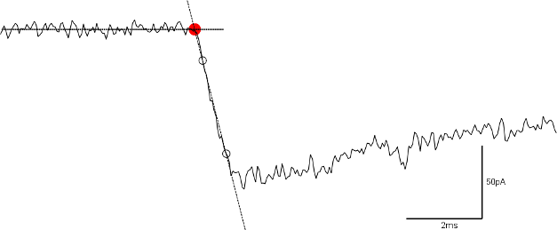
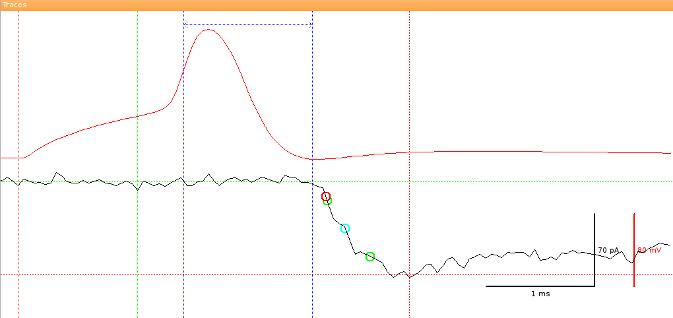

Stimfit measures latencies between two events. It is frequently used to measure the delay between a synaptic signal and a post-synaptic response. Classically, the synaptic delay or latency is defined as “the time interval between the peak of the inward current through the synaptic membrane and commencement of inward current through the postsynaptic membrane” (Katz and Miledi, 1965 [1]). Neglecting cable properties of neurons for a while, the maximal inward current during an action potential is expected to flow at the time of maximal slope during the rising phase (Jack et al., 1983 [2]), since
The commencement (sometimes called “foot”) of the postsynaptic current can robustly be estimated from the extrapolated intersection of the baseline with a line through the two points of time when the current is 20 and 80% of the peak current (Jonas et al., 1993 [4], Bartos et al., 2001 [3]).

Fig. 18: Foot of an EPSC (red circle), estimated from the extrapolated intersection of the baseline with a line through the two points of time when the current is 20 and 80% of the peak current (black open circles).¶
The method described above yields reliable results when both the pre- and the postsynaptic whole-cell recording with little noise and few artifacts. However, it may sometimes be favorable to use other estimates for the pre- and postsynaptic signals. For example, when extracellular stimulation is used or when there are a lot o failures in the postsynaptic response, latencies can be adjusted manually or fixed to predetermined measures (e.g the peak or the half-width of the reference channel). The following sections will explain how this is done in practice.
Two latency cursors exist in Stimfit that are plotted as dotted vertical blue lines. Latency is computed as the time interval between the first and the second latency cursor. You can set the cursors manually by pressing the key L or the latency button on the toolbar (Fig. 19A).
In addition, latency cursors can be adjusted to some predefined measurements using the Cursors settings menu with “Edit->Cursors Settings” (Fig. 19B). In the reference channel (red), Peak, Maximal slope and Half-width can be choosen as the first latency cursor. In the active channel (black), Peak, Maximal Slope, Half-width and Beginning of event can be used as second latency cursor. The resulting latency will now be computed from the measurement in the reference channel to the measurement in the active channel.
If manual is not set, cursor latencies will be located within the peak cursors. Be sure that you set the peak cursors in the right location on both active and reference channel. This is necessary to detect the peak, maximal slope, half-width or beginning of the event.
Then, if options other than manual are selected, the latencies will be computed based on the updated measurements from the reference and active channels (Fig. 20). The latency will be indicated as a double-headed arrow connecting the two latency cursors.

Fig. 20: The first latency cursor is set to meet the slope of rise of an action potential (in the reference channel, red) and the second latency cursor was selected to match the beginning of event (in the active channel, in black). The latency is indicated by a horizontal double-headed arrow.¶
It may sometimes be useful to align traces before measuring the latency, either for visualization purposes or to create an average without temporal jitter. Although an aligned average can be created using a tool-bar button, the recommended way to align traces is to use the Python shell.
align_selected(alignment, active=False)
stf.align_selected() aligns the selected traces to a point that is determined by the user-supplied function alignment and then shows the aligned traces in a new window. The alignment function is applied to the active channel if active=True or to the inactive channel if active=False. The alignment function has to return an index within a traces, and it should adhere to the general form index(active), where active is a boolean indicating whether the active or the inactive channel should be used. The most common alignment functions are built into the program:
maxrise_index(active)
stf.maxrise_index() returns the zero-based index of the maximal slope of the rise in units of sampling points (see Fig. 13), interpolated between adjacent sampling points, or a negative value upon failure.
peak_index(active)
stf.peak_index() returns the zero-based index of the peak value in units of sampling points (see Fig. 13) or a negative value upon failure. The return value may be interpolated if a moving average is used for the peak calculation.
foot_index(active)
stf.foot_index() returns the zero-based index of the foot of an event, as described in Fig. 18, or a negative value upon failure.
t50left_index(active)
stf.t50left_index() returns the zero-based index of the left half-maximal amplitude in units of sampling points (see Fig. 13), or a negative value upon failure. The return value will be interpolated between sampling points.
t50right_index(active)
stf.t50right_index() returns the zero-based index of he right half-maximal amplitude in units of sampling points (see Fig. 13), or a negative value upon failure. The return value will be interpolated between sampling points.
The following code can be used to align all traces within a file to the maximal slope of rise in the inactive channel.
# import the Stimfit core module:importstfdefalign_maxrise():"""Aligns all traces to the maximal slope of rise \ of the inactive channel. Baseline and peak cursors \ have to be set appropriately before using this function. Return value: True upon success. False otherwise."""stf.select_all()# check whether there is an inactive channel at all:if(stf.maxrise_index(False)<0):print"File not open, or no second channel; aborting now"returnFalsestf.align_selected(stf.maxrise_index,False)returnTrue